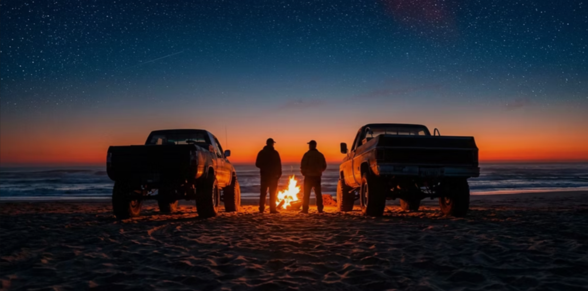
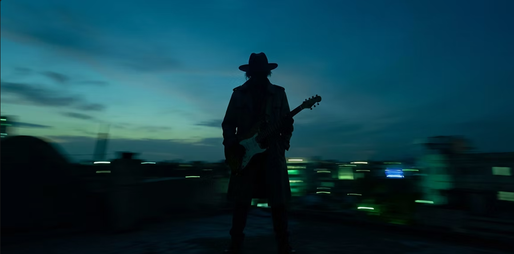
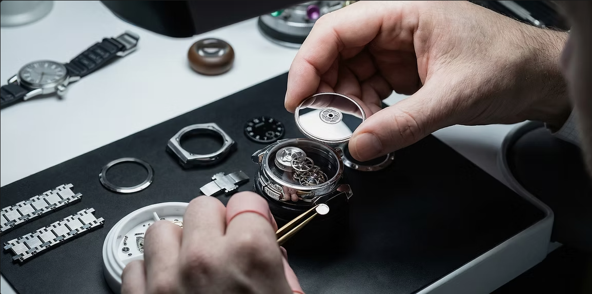
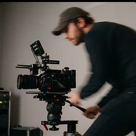
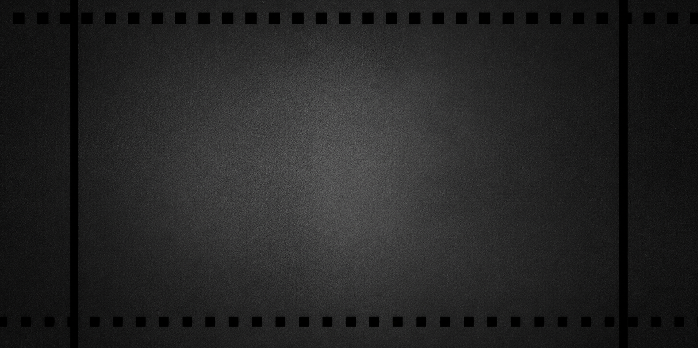

Stories Forged in Light and Shadow
Javier Murdez · Director & Cinematographer
Javier Murdez · Director & Cinematographer
Javier Murdez · Director & Cinematographer
Javier Murdez · Director & Cinematographer
Javier Murdez · Director & Cinematographer
Javier Murdez · Director & Cinematographer
Javier Murdez · Director & Cinematographer
Javier Murdez · Director & Cinematographer
Select Flimography
A curated look at recent narrative and commercial projects. This featured work section highlights a selection of portfolio pieces that reflect a range of visual styles and storytelling approaches.
01 // Short Film
Chasing the Last Light
As the sun sinks behind the horizon, a group of friends moves toward the warmth of a fire on the shoreline.

02 // Music Video
Velvet Reid
A visual journey through the dreamscape of Velvet Reid's latest single.

03 // Branded Documentary
The Party Artisan
A profile on a master watchmaker, exploring the dedication behind a dying craft for the brand Vailu Verrano.

Director's Statement
A Frame of Mind

I don't just capture images; I build worlds. My process is rooted in a relentless search for the emotional core of a story, translating a single, potent idea into a complete sensory experience. Every shadow, every cut, every note is a deliberate choice to serve the narrative and leave a lasting impression.

© 2035 Javier Murdez Films. Powered and secured by Wix